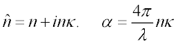
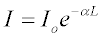
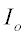

Creates an absorbing refractive material.
Syntax
MEDIA [ m ]
n [ n' n" ... ] ABSORB a [ j q t [ l ] [ 'name' ]
:
| Option | Description |
|---|---|
| m | starting media number |
| n n' n" ... | real (or complex) refractive indices |
| a | absorption (or gain) coefficient (inverse length units); positive for an absorbing medium or negative for a gain (lasing) medium |
| j | SURFACE designation for a inhomogeneous ABSORB function |
| q | exponent of inhomogeneous ABSORB function |
| t | step length to be used during ray trace in an inhomogeneous medium |
| l | maximum number of ray steps in medium; default is 1000 |
| name | descriptive name that can be assigned to this medium (only the first 24 characters after the comment delimiter are stored). |
Remarks
- ABSORB identifies the medium as a general absorbing one.
- Refractive indices for dispersive materials must be entered in the order indicated by the previous WAVELENGTHS command.
- If only real refractive index data are entered and a non-zero value is not given for a, the absorption is set to zero.
- If complex refractive index data are
entered and a is not specified, ASAP calculates a (the absorption coefficient) from the wavelength and the imaginary part
of the complex refractive index η as follows. Given:

The meaning of the absorption coefficient a is given by

In this equation, I is the intensity of a plane-wave at a depth L in the medium, when the intensity on entering the medium is

See the Example below.
- To handle inhomogeneous absorption or
gain, assign the medium a GENERAL polynomial function in the global coordinates
(X,Y,Z). The magnitude of j is the
SURFACE designation for this function.
The absorption coefficient a at each point in the medium is then given by:

- Linear interpolation is performed, if necessary, to compute a refractive index at a particular wavelength. The interpolated values are then used to calculate absorption coefficients (for complex indices).
Example
Consider aluminum with n^ = 1.44 + i5.23:
You can enter this in ASAP using either of two forms:
UNITS MICRONS
WAVELENGTH 0.589
N=1.44 !! REAL PART OF INDEX
NK=5.23 !! IMAGINARY PART OF INDEX
K=NK/N !! ATTENUATION INDEX KAPPA
ALPHA=4*3.14*NK/0.589 !! ABSORPTION COEFFICIENT AT 589 NANOMETERS
MEDIA
(N)`(NK) 'ALUMINUM_1' !! 1ST FORM
(N) ABSORB (ALPHA) 'ALUMINUM_2' !! 2ND FORM
RETURN
These two definitions are equivalent in the example given, in which only a single wavelength is present. The second form, using ABSORB, is independent of wavelength. The first form becomes wavelength-dependent if dispersion data are specified; that is, if multiple WAVELENGTHS are specified with corresponding complex refractive indices. In the latter case, ASAP interpolates among the given indices to compute the complex index and the absorption coefficient.
ASAP does not impose the Kramers-Krönig relation upon refractive indices specified for multiple wavelengths; the indices need not be consistent with causality.